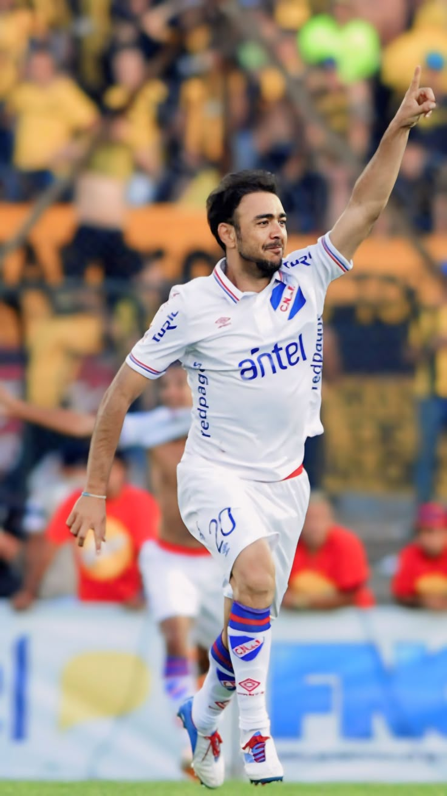

Trayectoria |
|
|  |
REY DE COPAS |
|
a trayectoria futbolística de Uruguay 🇺🇾 destaca tanto por la historia de su selección nacional 💙⚽ como por la del Club Nacional de Football 🔵⚪. La Celeste ha logrado dos Copas Mundiales 🏆🏆 y 15 Copas América 🏆🇺🇾, convirtiéndose en una potencia histórica del continente 🌎⚽. Por su lado, Nacional es uno de los clubes más exitosos del país 🥇, con un gran legado en títulos locales e internacionales 🌍. Entre sus mayores conquistas se encuentran tres Copas Libertadores 🏆🏆🏆 y tres Copas Intercontinentales 🌎🏆🌎🏆🌎🏆, que lo sitúan entre los grandes del fútbol sudamericano. Ambos representan la pasión, identidad y orgullo del fútbol uruguayo ⚽🔥🇺🇾. |
|